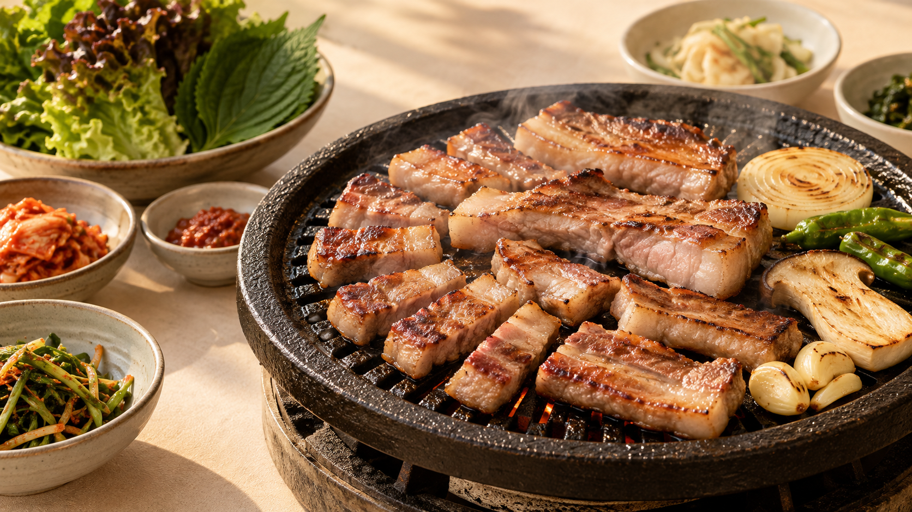
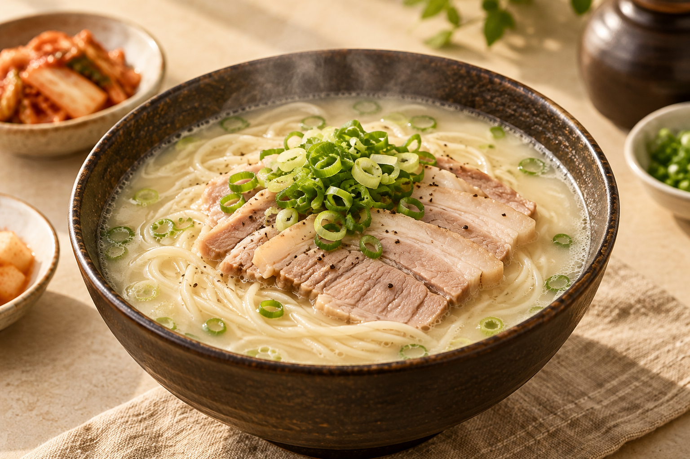
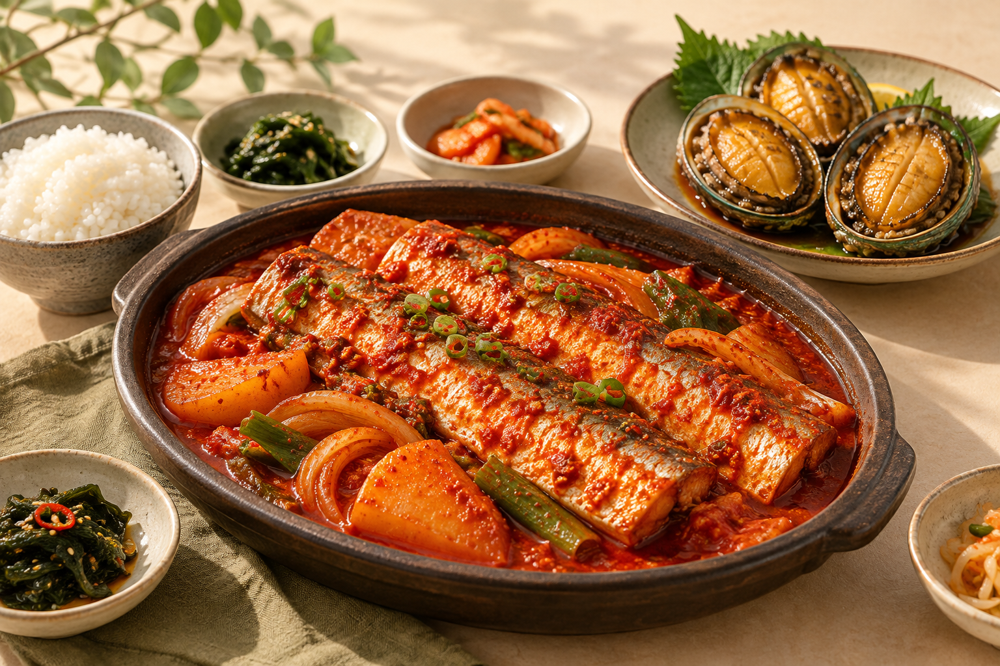

애월 · 노형
제주 흑돼지
노릇하게 구운 제주 흑돼지를 찾아보세요.
제주에서 먹고 싶은 메뉴와 식당을 찾아보세요.
JEJU FOOD GUIDE · 2026
어떤 메뉴를 찾으세요?
CURATED FOR JEJU
카드를 누르면 카카오맵에서 주변 장소를 찾아드려요.

애월 · 노형
노릇하게 구운 제주 흑돼지를 찾아보세요.

제주시 · 서귀포
든든하고 따뜻한 제주식 고기국수를 만나보세요.

성산 · 함덕
갈치와 전복으로 차린 제주 해산물 식당을 찾아보세요.
메뉴 또는 식당 키워드를 검색하면 카카오맵 장소 결과를 보여드려요.